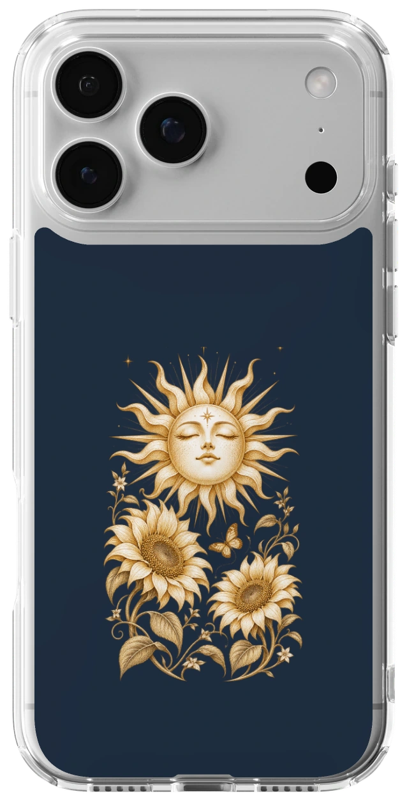
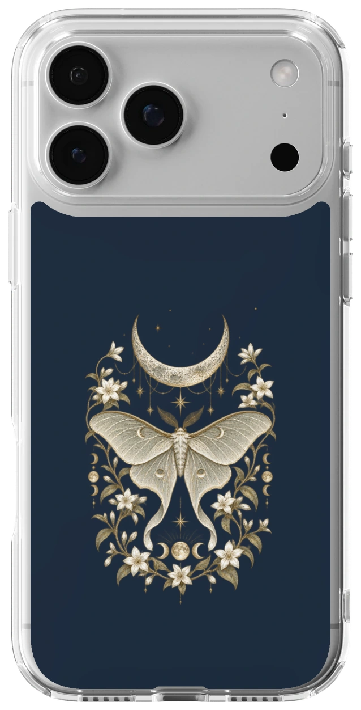
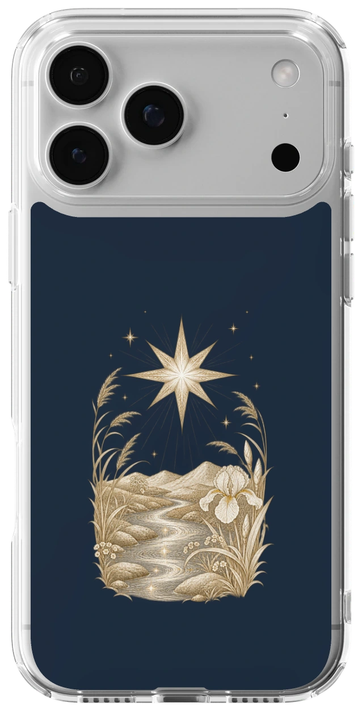
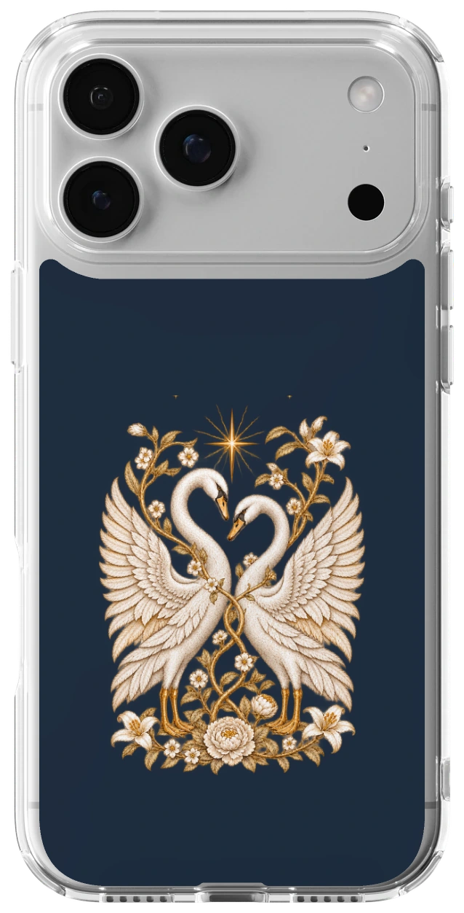

The Sun
$44.99Background: Midnight
Make it yoursTarot
The Sun, Moon, Star and Lovers. Four original illustrations with a background for every mood.
Five backgrounds + Artwork only. Tap a case to zoom.
Digital previews on clear cases, shown on iPhone 17 Pro Max. Choose your phone in the studio.

Background: Midnight
Make it yours
Background: Midnight
Make it yours
Background: Midnight
Make it yours
Background: Midnight
Make it yours